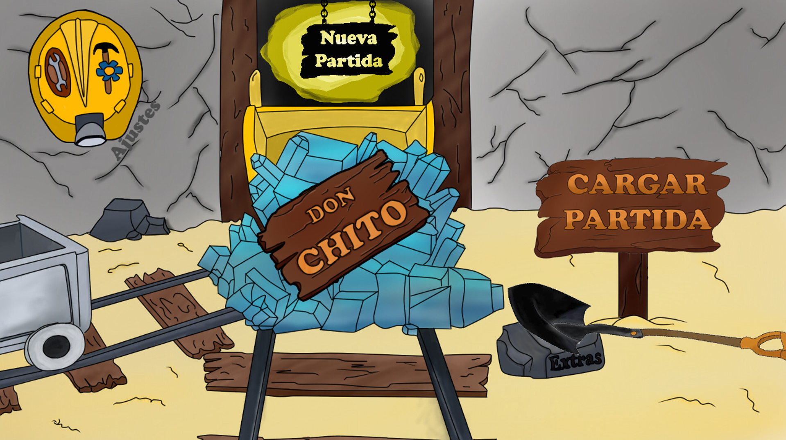
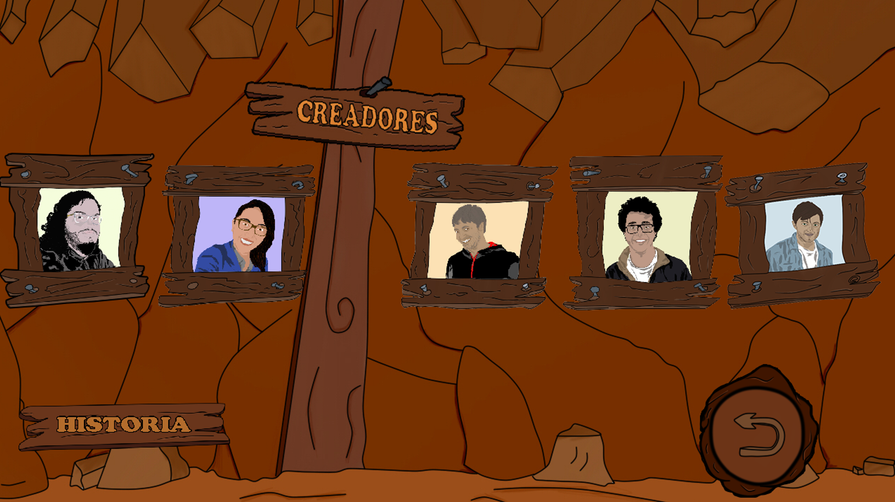
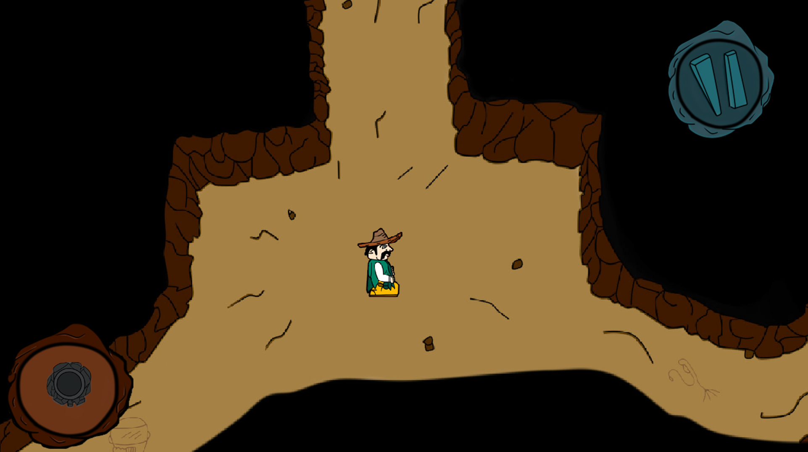
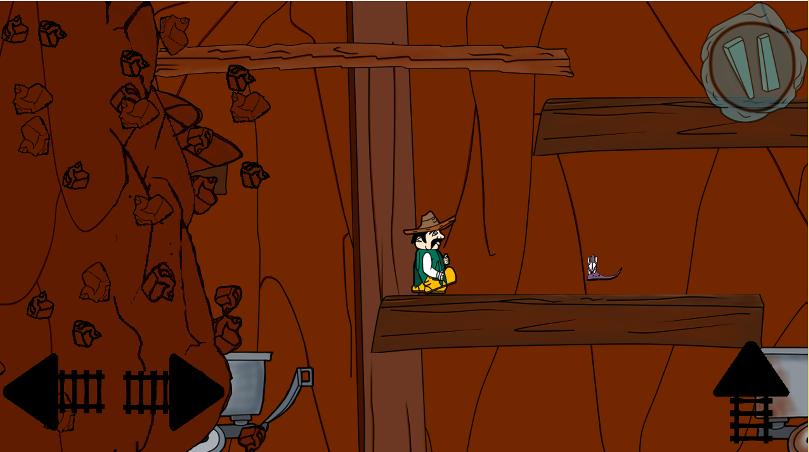
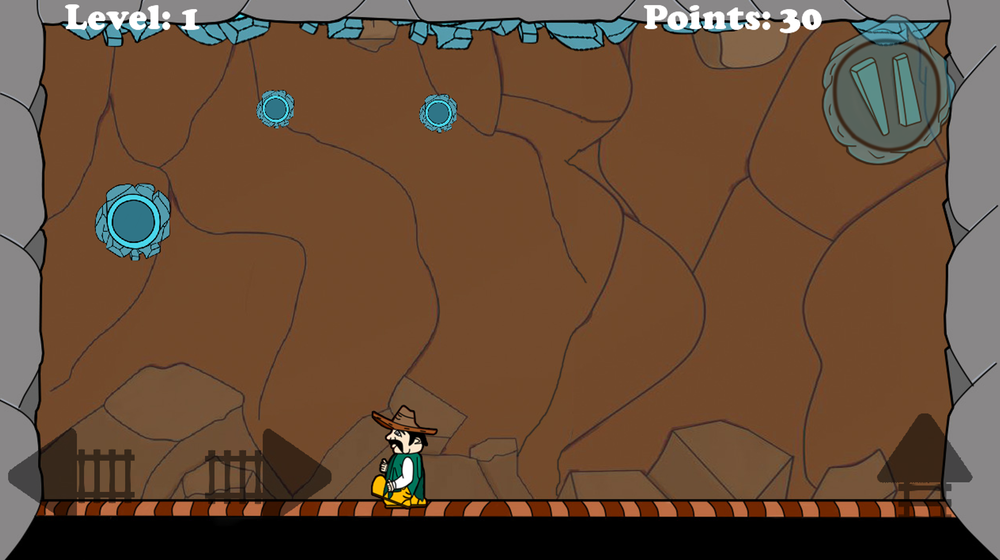
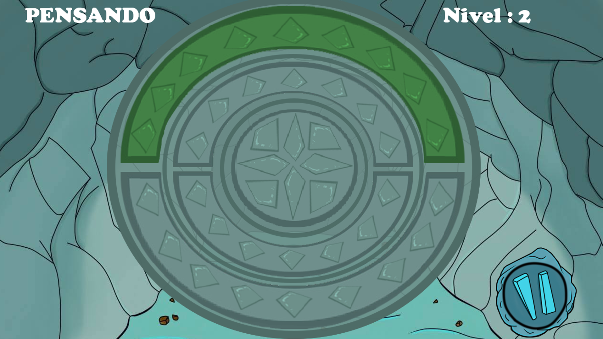
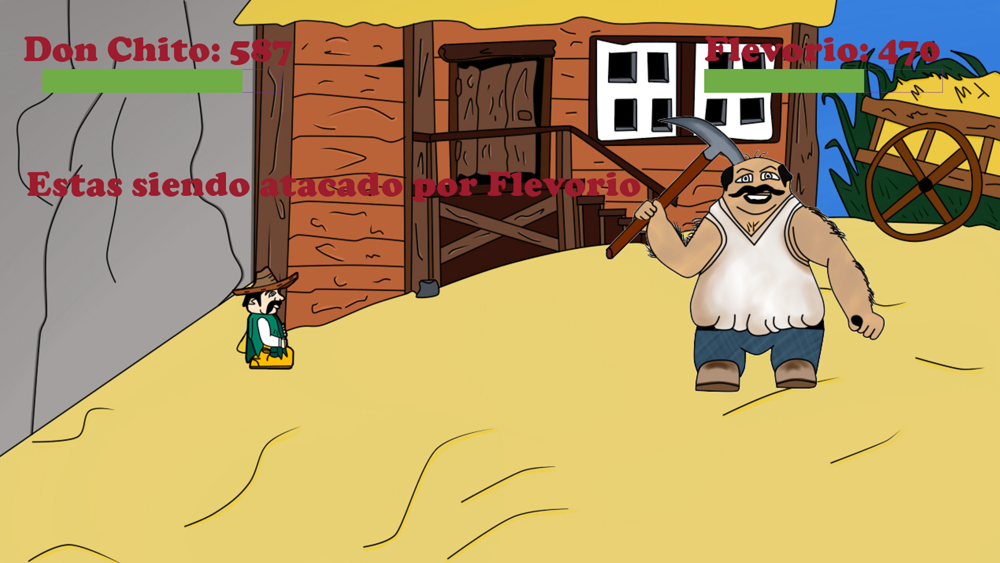

Welcome to Don Chito Website.
Once upon a time there was a small village called Laurencio. However, this was no ordinary village, as they are known for their mining fortune, as Laurencio is the only town with access to their mineral Livermorio, wanted by all people in the world because of their magical abilities.
There was a problem whatsoever, as the villager called Radcliffe Flevorio Hazio Perez was exiled from the town as he started robbing Livermorio for his own good. After Radcliffe left town, a new Sheriff was appointed known as Don Chito, outstanding villager that always helped the ones in need.
One night, Flevorio returned to Laurencio to seek vengeance, and dug a hole in front of the sheriff´s office and started invading the town. Don Chito, while rushing out to help the town, he fell into the hole made by Flevorio. Now he is trapped and there seems Laurencio is doomed.
If there was only one way Don Chito could save his town...
Don Chito Game e-Manual
Main Menu

Here´s the main menu, and you can access different options like:
- Extras: Info about the game creators and the history of Don Chito.
- Config: Here you choose if you want sound in the game or not.
- Load Game: You load the last game you played, and all your past progress is loaded.
- New Game: You reset your progress and start a new game.
Extras Screen

Here´s the extras screen and you can either see the detailed information about each member of the creators of the game or see the history of Don Chito.
New Game / Load Game : The cave

In "The Cave" you find yourlsef in the middle of the cave. Surprisingly, there are 3 ways to go, North, East or west. Each way leads you to a diferent game, where you can find valious items so you can finish your quest and save Laurencio from Flevorio Hazio Perez...
Livermorio Escape

Watch out! The way you went through started crumbling, you have to get out fast! Start jumping over and under obstacles to avoid falling to the void! However, you need to get the special boots lying around the cave to be able to flee completely to safety...
Roman´s Struggle

Watch your head! Rocks are falling all over you! But Don Chito is equipped with his trustworthy slingshot, which has enough power to destroy the rocks above! The only problem is, whenever you shoot a rock, it only divides itself in half! Shoot them enough times so they disappear.
Flevorio Says

What mysterious rock is this? It seems there is something on the other side... An exit! Here´s the way through, but it seems there's a puzzle in between... Complete the sequence so you can open the mysterious rock and finally face Flevorio! Here´s a Hint... be sure to have all items given to you in the other levels, it may help you significantly after!
Final Boss: Don Chito vs Flevorio Hazio Perez

Finally! The final battle for the sake of all mindkind... or at least the villagers from Laurencio. Use all your items to defeat Flevorio! This is a turn based RPG, where you can only defeat Flevorio with the use of ALL items! Each item has a special ability, but the key in defeating Flevorio is "special" combination of all of them! Good luck!